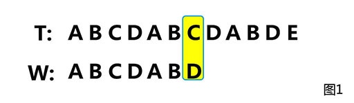

9. 二分查找，与变种二分查找。
二分搜索（binary search），也称折半搜索（half-interval search）、对数搜索（logarithmic search），是一种在有序数组中查找某一特定元素的搜索算法。搜索过程从数组的中间元素开始，如果中间元素正好是要查找的元素，则搜索过程结束；如果某一特定元素大于或者小于中间元素，则在数组大于或小于中间元素的那一半中查找，而且跟开始一样从中间元素开始比较。如果在某一步骤数组为空，则代表找不到。这种搜索算法每一次比较都使搜索范围缩小一半。
除直接在一个数组中查找元素外，可用在插入排序中。
复杂度分析
时间复杂度
折半搜索每次把搜索区域减少一半，时间复杂度为Ｏ(Log n) 。（n代表集合中元素的个数）空间复杂度
迭代：O(1) 递归：O(log n)
示例代码
// 递归版本
int binary_search(const int arr[], int start, int end, int key) {
if (start > end)
return -1;
int mid = start + (end - start) / 2; //直接平均可能会溢位
if (arr[mid] > key)
return binary_search(arr, start, mid - 1, key);
if (arr[mid] < key)
return binary_search(arr, mid + 1, end, key);
return mid;
}
// while循环
int binary_search(const int arr[], int start, int end, int key) {
int mid;
while (start <= end) {
mid = start + (end - start) / 2; //直接平均可能会溢位
if (arr[mid] < key)
start = mid + 1;
else if (arr[mid] > key)
end = mid - 1;
else
return mid;
}
return -1;
}
变种二分查找
改变数组
升序数组a经过循环右移后，二分查找给定元素x的位置。
如a={1,2,3,4,5,6,7}，循环移动后a={5,6,7,1,2,3,4}
思路
移动后的数组分为两部分，两部分内部都是升序排列的，中值mid必然属于这两部分之一。然后根据下标判断查找值是否属于这一部分，循环缩小mid值，直到arr[mid]等于查找值就返回。
代码实现
public static void main(String[] args){
int arr[]={5,6,7,1,2,3,4};
int out = VariantBinaryFind(arr,arr.length-1,1);
System.out.println("下标为： "+ out);
}
/**
* @param a 数组
* @param len 数组长度
* @param x 查找的元素
* @return 返回查找值得下标，不存在返回 -1
*/
public static int VariantBinaryFind(int arr[],int len,int x){
int left = 0;
int right = len;
while(left<=right){
int mid = left + (right -left)/2;
if(arr[mid]==x){
return mid;
}
if(arr[mid] >= arr[left]) //mid在左边序列
{
if(arr[left] > x || arr[mid] < x)
left = mid + 1; //x在右边序列
else
right = mid - 1; //x在左边序列
}
else //mid在右边序列
{
if(arr[right] < x || arr[mid] > x)
right = mid - 1; //x在左边序列
else
left = mid + 1; //x在右边序列
}
}
return -1;
}
运行结果：
10. 二叉树、B+树、AVL树、红黑树、哈夫曼树。
二叉树
二叉树（Binary tree）是每个节点最多有两个子树的树结构。二叉树的子树有左右之分，次序不能颠倒。
二叉树的第i层至多有 这里写图片描述个结点； 深度为k的二叉树至多共有这里写图片描述个结点； 对任何一棵二叉树T，如果其终端结点数为这里写图片描述，度为2的节点数为 这里写图片描述，则 这里写图片描述。
与树不同，树的节点个数至少为1，而二叉树的节点个数可以为0；树中节点的最大度数没有限制，而二叉树节点的最大度数为2；树的节点无左、右之分，而二叉树的结点有左、右之分。
B+树
B+ 树是一种树数据结构，是一个n叉树，每个节点通常有多个孩子，一颗B+树包含根节点、内部节点和叶子节点。根节点可能是一个叶子节点，也可能是一个包含两个或两个以上孩子节点的节点。
B+ 树通常用于数据库和操作系统的文件系统中。NTFS, ReiserFS, NSS, XFS, JFS, ReFS 和BFS等文件系统都在使用B+树作为元数据索引。B+ 树的特点是能够保持数据稳定有序，其插入与修改拥有较稳定的对数时间复杂度。B+ 树元素自底向上插入。
AVL树
AVL树中任何节点的两个子树的高度最大差别为一，所以它也被称为高度平衡树。查找、插入和删除在平均和最坏情况下都是O（log n）。增加和删除可能需要通过一次或多次树旋转来重新平衡这个树。
节点的平衡因子是它的左子树的高度减去它的右子树的高度（有时相反）。带有平衡因子1、0或 -1的节点被认为是平衡的。带有平衡因子 -2或2的节点被认为是不平衡的，并需要重新平衡这个树。平衡因子可以直接存储在每个节点中，或从可能存储在节点中的子树高度计算出来。
红黑树
红黑树（Red Black Tree） 是一种自平衡二叉查找树，红黑树和AVL树类似，都是在进行插入和删除操作时通过特定操作保持二叉查找树的平衡，从而获得较高的查找性能。
它虽然是复杂的，但它的最坏情况运行时间也是非常良好的，并且在实践中是高效的： 它可以在O(log n)时间内做查找，插入和删除，这里的n 是树中元素的数目。详情
哈夫曼树
哈夫曼树又称最优二叉树，是一种带权路径长度最短的二叉树。所谓树的带权路径长度，就是树中所有的叶结点的权值乘上其到根结点的 路径长度（若根结点为0层，叶结点到根结点的路径长度为叶结点的层数）。
树的带权路径长度记为WPL= (W1L1+W2L2+W3L3+...+WnLn)，N个权值Wi(i=1,2,...n)构成一棵有N个叶结点的二叉树，相应的叶结点的路径长度为Li(i=1,2,...n)。可以证明哈夫曼树的WPL是最小的。
哈夫曼树的构造
假设有n个权值，则构造出的哈夫曼树有n个叶子结点。 n个权值分别设为 w1、w2、…、wn，则哈夫曼树的构造规则为：
① 将w1、w2、…，wn看成是有n 棵树的森林(每棵树仅有一个结点)；
②在森林中选出两个根结点的权值最小的树合并，作为一棵新树的左、右子树，且新树的根结点权值为其左、右子树根结点权值之和；
③从森林中删除选取的两棵树，并将新树加入森林；
④重复②、③步，直到森林中只剩一棵树为止，该树即为所求得的哈夫曼树。
哈夫曼编码
哈夫曼编码是可变字长编码(VLC)的一种。该方法完全依据字符出现概率来构造异字头的平均长度最短的码字，有时称之为最佳编码。
有A,B,C,D,E五个字符，出现的频率（即权值）分别为5,4,3,2,1，对其进行哈夫曼编码。
首先把A,B,C,D,E构造成一棵哈夫曼树（２.１有说明）；
通过从哈夫曼树根结点开始，对左子树分配代码“0”，右子树分配代码“1”，一直到达叶子结点为止，然后将从树根沿每条路径到达叶子结点的代码排列起来，便得到了哈夫曼编码。
所以各字符对应的编码为：A->11,B->10,C->00,D->011,E->010
霍夫曼编码是一种无前缀编码。解码时不会混淆。其主要应用在数据压缩，加密解密等场合。
11. 二叉树的前中后续遍历：递归与非递归写法，层序遍历算法。
遍历二叉树：L、D、R分别表示遍历左子树、访问根结点和遍历右子树，则先(根)序遍历二叉树的顺序是DLR，中(根)序遍历二叉树的顺序是LDR，后(根)序遍历二叉树的顺序是LRD。还有按层遍历二叉树。这些方法的时间复杂度都是O(n)，n为结点个数。
用二叉树表示上述表达式：a+b*(c-d)-e/f
- 先序遍历的序列是：-+a*b-cd/ef
- 中序遍历的序列是：a+b*c-d-e/f
- 后序遍历的序列是：abcd-*+ef/- 二叉树的存储
1顺序存储
二叉树可以用数组或线性表来存储，而且如果这是满二叉树，这种方法不会浪费空间。用这种紧凑排列，如果一个结点的索引为i，它的子结点能在索引2i+1和2i+2找到，并且它的父节点（如果有）能在索引floor((i-1)/2)找到（假设根节点的索引为0）。
２二叉链表存储
二叉树通常用树结点结构来存储。有时也包含指向唯一的父节点的指针。如果一个结点的子结点个数小于2，一些子结点指针可能为空值，或者为特殊的哨兵结点。 使用链表能避免顺序储存浪费空间的问题，算法和结构相对简单，但使用二叉链表，由于缺乏父链的指引，在找回父节点时需要重新扫描树得知父节点的节点地址。

３三叉链表存储
改进于二叉链表，增加父节点的指引，能更好地实现节点间的访问，不过算法相对复杂。 当二叉树用三叉链表表示时，有N个结点，就会有N+2个空指针。
前中后续遍历（递归）
/*
*前序遍历二叉树
* */
public void preOrder(Node node){
if(node != null){
System.out.print(node.data);
preOrder(node.leftChild);
preOrder(node.rightChild);
}
}
/*
*中序遍历二叉树
* */
public void inOrder(Node node){
if(node != null){
inOrder(node.leftChild);
System.out.print(node.data);
inOrder(node.rightChild);
}
}
/*
*后序遍历二叉树
* */
public void postOrder(Node node){
if(node != null){
postOrder(node.leftChild);
postOrder(node.rightChild);
System.out.print(node.data);
}
前中后续遍历（非递归）
/**
*
* 【前序】
* 利用栈实现循环先序遍历二叉树
* 这种实现类似于图的深度优先遍历（DFS）
* 维护一个栈，将根节点入栈，然后只要栈不为空，出栈并访问，接着依次将访问节点的右节点、左节点入栈。
* 这种方式应该是对先序遍历的一种特殊实现（看上去简单明了），但是不具备很好的扩展性，在中序和后序方式中不适用
*/
public static void preOrderStack(Node root){
if(root==null)return;
Stack<Node> s=new Stack<Node>();
s.push(root);
while(!s.isEmpty()){
Node temp=s.pop();
System.out.println(temp.value);
if(temp.right!=null) s.push(temp.right);
if(temp.left!=null) s.push(temp.left);
}
}
/**
*
* 【中序】
* 利用栈模拟递归过程实现循环中序遍历二叉树
* 访问的时间是在左子树都处理完直到null的时候出栈并访问。
*/
public static void inOrderStack(Node root){
if(root==null)return;
Stack<Node> s=new Stack<Node>();
while(root!=null||!s.isEmpty()){
while(root!=null){
s.push(root);//先访问再入栈
root=root.left;
}
root=s.pop();
System.out.println(root.value);
root=root.right;//如果是null，出栈并处理右子树
}
}
/**
*
* 【后续】
* 后序遍历不同于先序和中序，它是要先处理完左右子树，然后再处理根(回溯)，所以需要一个记录哪些节点已经被访问的结构(可以在树结构里面加一个标记)，这里可以用map实现
*/
public static void postOrderStack(Node root){
if(root==null)return;
Stack<Node> s=new Stack<Node>();
Map<Node,Boolean> map=new HashMap<Node,Boolean>();
s.push(root);
while(!s.isEmpty()){
Node temp=s.peek();
if(temp.left!=null&&!map.containsKey(temp.left)){
temp=temp.left;
while(temp!=null){
if(map.containsKey(temp))break;
else s.push(temp);
temp=temp.left;
}
continue;
}
if(temp.right!=null&&!map.containsKey(temp.right)){
s.push(temp.right);
continue;
}
Node t=s.pop();
map.put(t,true);
System.out.println(t.value);
}
}
广度优先遍历（层次遍历）
/**
* @param root 树根节点
* 层序遍历二叉树，用队列实现，先将根节点入队列，只要队列不为空，然后出队列，并访问，接着讲访问节点的左右子树依次入队列
*/
public static void levelTravel(Node root){
if(root==null)return;
Queue<Node> q=new LinkedList<Node>();
q.add(root);
while(!q.isEmpty()){
Node temp = q.poll();
System.out.println(temp.value);
if(temp.left!=null)q.add(temp.left);
if(temp.right!=null)q.add(temp.right);
}
}
12. 图的BFS与DFS算法，最小生成树prim算法与最短路径Dijkstra算法。
图G是由顶点的有穷集合，以及顶点之间的关系组成，顶点的集合记为V，顶点之间的关系构成边的集合E，G=(V,E).
如果给图的每条边规定一个方向，那么得到的图称为有向图，其边也称为有向边。在有向图中，与一个节点相关联的边有出边和入边之分，而与一个有向边关联的两个点也有始点和终点之分。相反，边没有方向的图称为无向图。
图的遍历
① DFS（Depth First Search）深度优先搜索，为每个顶点设立一个“访问标志”。首先将图中每个顶点的访问标志设为 FALSE, 之后搜索图中每个顶点，如果未被访问，则以该顶点为起始点，进行遍历。
若当前访问的顶点的邻接顶点有未被访问的，则任选一个访问之。反之，退回到最近访问过的顶点；直到与起始顶点相通的全部顶点都访问完毕；
遍历图的过程实质上是对每个顶点查找其邻接点的过程，所耗费的时间取决于所采用的存储结构。 对图中的每个顶点至多调用1次DFS算法，因为一旦某个顶点已访问过，则不再从它出发进行搜索。
邻接链表表示：查找每个顶点的邻接点所需时间为O(e)，e为边(弧)数，算法时间复杂度为O(n+e)
数组表示：查找每个顶点的邻接点所需时间为O(n2)，n为顶点数，算法时间复杂度为O(n2)
② BFS（Breadth First Search）广度优先遍历，从图的某一结点出发，首先依次访问该结点的所有邻接顶点 Vi1, Vi2, …, Vin 再按这些顶点被访问的先后次序依次访问与它们相邻接的所有未被访问的顶点，重复此过程，直至所有顶点均被访问为止。
遍历代码（邻接矩阵）
// 邻接矩阵存储图
public class Graph {
// 顶点数
private int number = 9;
// 记录顶点是否被访问
private boolean[] flag;
// 顶点
private String[] vertexs = { "A", "B", "C", "D", "E", "F", "G", "H", "I" };
// 边
private int[][] edges = {
{ 0, 1, 0, 0, 0, 1, 1, 0, 0 },
{ 1, 0, 1, 0, 0, 0, 1, 0, 1 },
{ 0, 1, 0, 1, 0, 0, 0, 0, 1 },
{ 0, 0, 1, 0, 1, 0, 1, 1, 1 },
{ 0, 0, 0, 1, 0, 1, 0, 1, 0 },
{ 1, 0, 0, 0, 1, 0, 1, 0, 0 },
{ 0, 1, 0, 1, 0, 1, 0, 1, 0 },
{ 0, 0, 0, 1, 1, 0, 1, 0, 0 },
{ 0, 1, 1, 1, 0, 0, 0, 0, 0 }
};
// 图的深度遍历操作(递归)
void DFSTraverse() {
flag = new boolean[number];
for (int i = 0; i < number; i++) {
if (flag[i] == false) {// 当前顶点没有被访问
DFS(i);
}
}
}
// 图的深度优先递归算法
void DFS(int i) {
flag[i] = true;// 第i个顶点被访问
System.out.print(vertexs[i] + " ");
for (int j = 0; j < number; j++) {
if (flag[j] == false && edges[i][j] == 1) {
DFS(j);
}
}
}
// 图的广度遍历操作
void BFSTraverse() {
flag = new boolean[number];
Queue<Integer> queue = new LinkedList<Integer>();
for (int i = 0; i < number; i++) {
if (flag[i] == false) {
flag[i] = true;
System.out.print(vertexs[i] + " ");
queue.add(i);
while (!queue.isEmpty()) {
int j = queue.poll();
for (int k = 0; k < number; k++) {
if (edges[j][k] == 1 && flag[k] == false) {
flag[k] = true;
System.out.print(vertexs[k] + " ");
queue.add(k);
}
}
}
}
}
}
public static void main(String[] args) {
Graph graph = new Graph();
System.out.println("-----------DFS-----------------");
graph.DFSTraverse();
System.out.println();
System.out.println("-----------BFS-----------------");
graph.BFSTraverse();
}
}
运行结果：
**最小生成树prim算法
**
从单一顶点开始，普里姆算法按照以下步骤逐步扩大树中所含顶点的数目，直到遍及连通图的所有顶点。
输入：一个加权连通图，其中顶点集合为V，边集合为E；
初始化：Vnew = {x}，其中x为集合V中的任一节点（起始点），Enew = {}；
重复下列操作，直到Vnew = V：
3.1 在集合E中选取权值最小的边（u, v），其中u为集合Vnew中的元素，而v则是V中没有加入Vnew的顶点（如果存在有多条满足前述条件即具有相同权值的边，则可任意选取其中之一）； 3.2 将v加入集合Vnew中，将（u, v）加入集合Enew中；
4. 输出：使用集合Vnew和Enew来描述所得到的最小生成树。
此为原始的加权连通图。每条边一侧的数字代表其权值。
顶点D被任意选为起始点。顶点A、B、E和F通过单条边与D相连。A是距离D最近的顶点，因此将A及对应边AD以高亮表示。
下一个顶点为距离D或A最近的顶点。B距D为9，距A为7，E为15，F为6。因此，F距D或A最近，因此将顶点F与相应边DF以高亮表示。
算法继续重复上面的步骤。距离A为7的顶点B被高亮表示。
在当前情况下，可以在C、E与G间进行选择。C距B为8，E距B为7，G距F为11。E最近，因此将顶点E与相应边BE高亮表示。
这里，可供选择的顶点只有C和G。C距E为5，G距E为9，故选取C，并与边EC一同高亮表示。
顶点G是唯一剩下的顶点，它距F为11，距E为9，E最近，故高亮表示G及相应边EG。
现在，所有顶点均已被选取，图中绿色部分即为连通图的最小生成树。在此例中，最小生成树的权值之和为39。

Java代码实现
public class Prim {
//结点集
public static List<Vertex> vertexList = new ArrayList<Vertex>();
//边集
public static List<Edge> EdgeList = new ArrayList<Edge>();
//已经访问过的结点集
public static List<Vertex> containVertexList = new ArrayList<Vertex>();
public static void main(String[] args) {
primTree();
}
public static void primTree(){
//初始化图
buildGraph();
//起始点
Vertex start = vertexList.get(0);
containVertexList.add(start);
for(int n=0;n<vertexList.size()-1;n++){
//临时节点a
Vertex temp = new Vertex(start.key);
Edge tempedge = new Edge(start,start,1000);
for(Vertex v : containVertexList){
for(Edge e : EdgeList){
//找出相邻最小边
if(e.start==v && !containVertex(e.end)){
if(e.Len<tempedge.Len){
temp = e.end;
tempedge = e;
}
}
}
}
//把该点加入
containVertexList.add(temp);
}
//打印输出
Iterator it = containVertexList.iterator();
while(it.hasNext()){
Vertex v =(Vertex) it.next();
System.out.println(v.key);
}
}
public static void buildGraph() {
Vertex v1 = new Vertex("a");
Prim.vertexList.add(v1);
Vertex v2 = new Vertex("b");
Prim.vertexList.add(v2);
Vertex v3 = new Vertex("c");
Prim.vertexList.add(v3);
Vertex v4 = new Vertex("d");
Prim.vertexList.add(v4);
Vertex v5 = new Vertex("e");
Prim.vertexList.add(v5);
addEdge(v1, v2, 6);
addEdge(v1, v3, 7);
addEdge(v2, v3, 8);
addEdge(v2, v5, 4);
addEdge(v2, v4, 5);
addEdge(v3, v4, 3);
addEdge(v3, v5, 9);
addEdge(v5, v4, 7);
addEdge(v5, v1, 2);
addEdge(v4, v2, 2);
}
public static void addEdge(Vertex a, Vertex b, int w) {
Edge e = new Edge(a, b, w);
Prim.EdgeList.add(e);
}
public static boolean containVertex(Vertex vte){
for(Vertex v : containVertexList){
if(v.key.equals(vte.key))
return true;
}
return false;
}
}
class Vertex {
String key;
Vertex(String key){
this.key = key;
}
}
class Edge{
Vertex start;
Vertex end;
int Len;
Edge(Vertex start,Vertex end,int key){
this.start = start;
this.end = end;
this.Len = key;
}
}
Dijkstra算法
使用了广度优先搜索解决非负权有向图的单源最短路径问题，算法最终得到一个最短路径树（一个节点到其他所有节点的最短路径）。该算法常用于路由算法或者作为其他图算法的一个子模块。主要特点是以起始点为中心向外层层扩展，直到扩展到终点为止。
算法思想：设G=(V,E)是一个带权有向图，把图中顶点集合V分成两组，第一组为已求出最短路径的顶点集合（用S表示，初始时S中只有一个源点，以后每求得一条最短路径 , 就将加入到集合S中，直到全部顶点都加入到S中，算法就结束了）
第二组为其余未确定最短路径的顶点集合（用U表示），按最短路径长度的递增次序依次把第二组的顶点加入S中。在加入的过程中，总保持从源点v到S中各顶点的最短路径长度不大于从源点v到U中任何顶点的最短路径长度。此外，每个顶点对应一个距离，S中的顶点的距离就是从v到此顶点的最短路径长度，U中的顶点的距离，是从v到此顶点只包括S中的顶点为中间顶点的当前最短路径长度。
算法步骤：
a. 初始时，S只包含源点，即S＝{v}，v的距离为0。U包含除v外的其他顶点，即:U={其余顶点}，若v与U中顶点u有边，则（u,v）正常有权值，若u不是v的出边邻接点，则（u,v）权值为∞。
b. 从U中选取一个距离v最小的顶点k，把k，加入S中（该选定的距离就是v到k的最短路径长度）。
c. 以k为新考虑的中间点，修改U中各顶点的距离；若从源点v到顶点u的距离（经过顶点k）比原来距离（不经过顶点k）短，则修改顶点u的距离值，修改后的距离值的顶点k的距离加上边上的权。
d. 重复步骤b和c直到所有顶点都包含在S中。
Dijkstra算法（Java实现）
public class Dijkstra {
private static int M = 10000; //此路不通
public static void main(String[] args) {
//邻接矩阵
int[][] weight = {
{0,10,M,30,100},
{M,0,50,M,M},
{M,M,0,M,10},
{M,M,20,0,60},
{M,M,M,M,0}
};
int start=0;
int[] shortPath = dijkstra(weight,start);
for(int i = 0;i < shortPath.length;i++)
System.out.println("从"+start+"出发到"+i+"的最短距离为："+shortPath[i]);
}
public static int[] dijkstra(int[][] weight, int start) {
//接受一个有向图的权重矩阵，和一个起点编号start（从0编号，顶点存在数组中）
//返回一个int[] 数组，表示从start到它的最短路径长度
int n = weight.length; //顶点个数
int[] shortPath = new int[n]; //保存start到其他各点的最短路径
String[] path = new String[n]; //保存start到其他各点最短路径的字符串表示
for(int i=0;i<n;i++)
path[i]=new String(start+"-->"+i);
int[] visited = new int[n]; //标记当前该顶点的最短路径是否已经求出,1表示已求出
//初始化，第一个顶点已经求出
shortPath[start] = 0;
visited[start] = 1;
for(int count = 1; count < n; count++) { //要加入n-1个顶点
int k = -1; //选出一个距离初始顶点start最近的未标记顶点
int dmin = Integer.MAX_VALUE;
for(int i = 0; i < n; i++) {
if(visited[i] == 0 && weight[start][i] < dmin) {
dmin = weight[start][i];
k = i;
}
}
//将新选出的顶点标记为已求出最短路径，且到start的最短路径就是dmin
shortPath[k] = dmin;
visited[k] = 1;
//以k为中间点，修正从start到未访问各点的距离
for(int i = 0; i < n; i++) {
if(visited[i] == 0 && weight[start][k] + weight[k][i] < weight[start][i]) {
weight[start][i] = weight[start][k] + weight[k][i];
path[i] = path[k] + "-->" + i;
}
}
}
for(int i = 0; i < n; i++) {
System.out.println("从"+start+"出发到"+i+"的最短路径为："+path[i]);
}
System.out.println("=====================================");
return shortPath;
}
}
运行结果：
从0出发到0的最短路径为：0-->0
从0出发到1的最短路径为：0-->1
从0出发到2的最短路径为：0-->3-->2
从0出发到3的最短路径为：0-->3
从0出发到4的最短路径为：0-->3-->2-->4
=====================================
从0出发到0的最短距离为：0
从0出发到1的最短距离为：10
从0出发到2的最短距离为：50
从0出发到3的最短距离为：30
从0出发到4的最短距离为：60
13. KMP算法。
KMP算法的关键是利用匹配失败后的信息，尽量减少模式串与主串的匹配次数以达到快速匹配的目的。
给定两个字符串T和W，长度分别为m和n，判断W是否在T中出现，如果出现则返回出现的位置。常规方法是遍历T的每一个位置，然后从该位置开始和W进行匹配，但是这种方法的复杂度是O(mn)。kmp算法通过一个O(n)的预处理，使匹配的复杂度降为O(m+n)。
我们要在 字符串Ｔ＝“ＡＢＣＤＡＢＣＤＡＢＤＥ”中查找 字符串Ｗ＝＂ＡＢＣＤＡＢＤ＂出现的位置。

很明显可以看出前６位都是匹配的，然而第７位不匹配，一般的做法就是从Ｔ[i]（i从1到9）开始和W开始循环比较。直到i=4，也就是图2，比较成功返回下标4。
这样比较无异效率很低，然而我们发现在字符串"ABCDAB"之中有两个"AB"，第一次比较失败之后，又循环比较了四次，把W字符串从第一个"AB"的位置移动到了第二个"AB"处（显然这四次比较毫无意义）。于是Knuth、Morris、Pratt这三个人就想了个办法去掉了这些无意义的比较。
然而是怎么实现的呢？就要从Ｗ字符串的部分匹配值（相等的前缀和后缀）说起。
部分匹配值
"前缀"指除了最后一个字符以外，一个字符串的全部头部组合；
"后缀"指除了第一个字符以外，一个字符串的全部尾部组合。
"部分匹配值"就是"前缀"和"后缀"的最长的共有元素的长度。以Ｗ字符串"ABCDABD"为例：
"A"的前缀和后缀都为空集，共有元素的长度为0；
"AB"的前缀为[A]，后缀为[B]，共有元素的长度为0；
"ABC"的前缀为[A, AB]，后缀为[BC, C]，共有元素的长度0；
"ABCD"的前缀为[A, AB, ABC]，后缀为[BCD, CD, D]，共有元素的长度为0；
"ABCDA"的前缀为[A, AB, ABC, ABCD]，后缀为[BCDA, CDA, DA, A]，共有元素为"A"，长度为1；
"ABCDAB"的前缀为[A, AB, ABC, ABCD, ABCDA]，后缀为[BCDAB, CDAB, DAB, AB, B]，共有元素为"AB"，长度为2；
"ABCDABD"的前缀为[A, AB, ABC, ABCD, ABCDA, ABCDAB]，后缀为[BCDABD, CDABD, DABD, ABD, BD, D]，共有元素的长度为0。
从上面我们就得出了字符串Ｗ的部分匹配表：
我们把部分匹配表存放在一个next[]数组中，那部分匹配值究竟怎么用呢？ 我们可以根据部分匹配值计算出向后移动的位数，避免了一位位的比较：
移动位数 = 已匹配的字符数 - 对应的部分匹配值
以图１中为例：
前６位已经匹配（已匹配的字符数 ＝６）； next[5] = 2 (对应的部分匹配值 = 2); 我们可以得出移动位数为 6-2=4位。
可以看出next数组的作用，就是在我们匹配失败的时候，确定我们子串需要往后移动的距离，而避免我们的主串指针进行回退。这样可以保证主串在只遍历一遍的情况下找到子串。因此KMP算法的重点就是如何快速的求出这个next数组。
2 求next数组
next数组是只与子串有关与主串无关的，它记录的是子串到每个字符处那个公共前缀（或后缀）的最大长度。
假设我们已经求出的next[i-1] = ｊ，即Ｗ从０到i-1处这段字符串中，最大的相等的前缀和后缀长度为ｊ。 那如何求得next[i]呢？
这是后就要分为两种情况了：
①、如果Ｗ[i]==W[j]
显然前缀往后再加上一个字符之后依然会和后缀往后加上一个字符相等，此时
next[i] = next[i-1] + 1，即next[i] = ｊ+1
②、如果Ｗ[i]！=W[j]
那么 Ｗ[0-i]这段字符串 中，最大的相等的前缀和后缀的长度必然小于等于ｊ。 （以前是j，现在加了一个不同字符，所以不可能大于j）。
从上面的Ｗ字符串的前缀分析可以看出，短字符串的前缀必是长字符串前缀的子集。
既然长的匹配值不行了，我们只能回溯到短的匹配。把ｊ下标循环向前（下标０方向）移动，直到W[j]W[i]或者j0为止（回到第一种情况）。
那么ｊ怎么移动呢？当前Ｗ[i]！=W[j]，那么就求0到j-1的最长匹配值（next[j - 1]），再比较这个最长匹配串的末尾字符的下一位是否等于w[i]，不相等再循环。 上代码：
private static int[] getNextArray(String s){
char[] ch = s.toCharArray();
int i,j;
int[] next = new int[ch.length];
for(i = 1,j = 0; i < ch.length; i++){
while(j > 0 && ch[i] != ch[j]){
j = next[j - 1]; //j <next[j - 1],所以向前移动
}
if(ch[i] == ch[j]){
j++;
}
next[i] = j;
}
return next;
}
Ｗ字符串"ABCDABD"为例，运行结果如下：
KMP
其实进行next数组求解的过程，类似于主串和子串进行匹配的过程，只不过是在next数组求解过程中，是子串和子串自己进行比较而已。
因此整个KMP算法的代码过程如下：
/**
* @param str1 被匹配的字符串
* @param str2 子串
* @return 布尔值
*/
public static boolean kmp(String str1,String str2){
char[] strA = str1.toCharArray();
char[] strB = str2.toCharArray();
int[] next = getNextArray(str2);
int i,j; //这里i是从0开始的
for(i = 0,j = 0; i < strA.length; i++){
while(j > 0 && strA[i] != strB[j])
j = next[j-1];
if(strA[i] == strB[j]){
j++;
}
//匹配成功
if(j == strB.length){
return true;
}
}
return false;
}
private static int[] getNextArray(String s){
char[] ch = s.toCharArray();
int i,j;
//数组初始全部为0，所以next[0]=0
int[] next = new int[ch.length];
for(i = 1,j = 0; i < ch.length; i++){
while(j > 0 && ch[i] != ch[j]){
//j <next[j - 1],所以向前移动
j = next[j - 1];
}
if(ch[i] == ch[j]){
j++;
}
next[i] = j;
}
return next;
}
public static void main(String[] args) {
String T ="ＡＢＣＤＡＢＣＤＡＢＤＥ";
String W = "ＡＢＣＤＡＢＤ";
System.out.println(kmp(T,W));
}
运行结果：